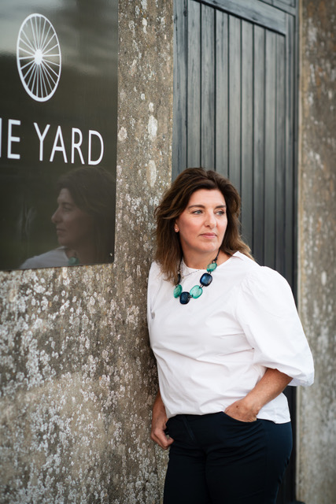
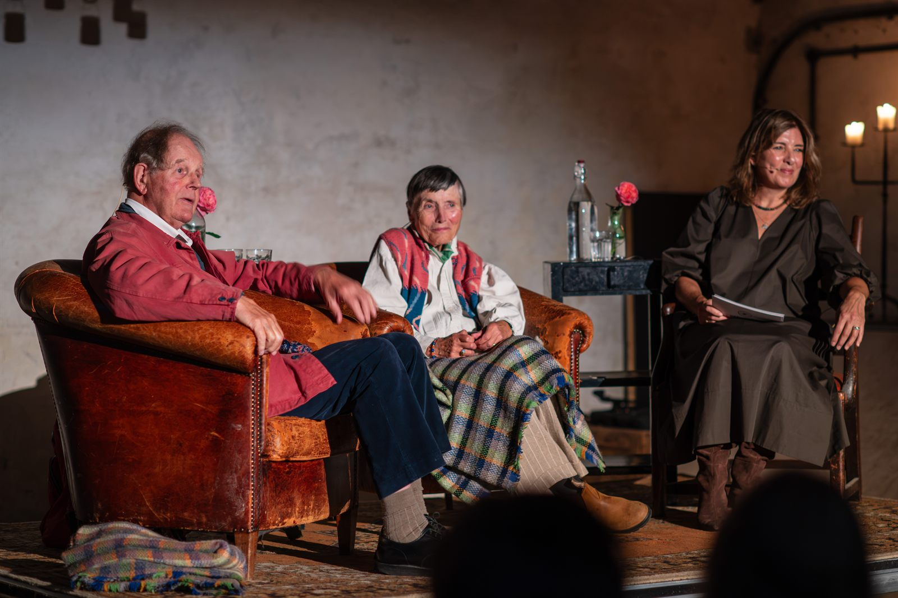
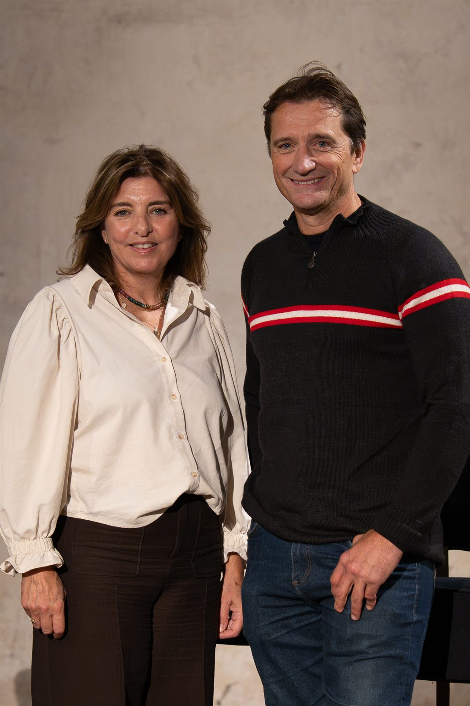
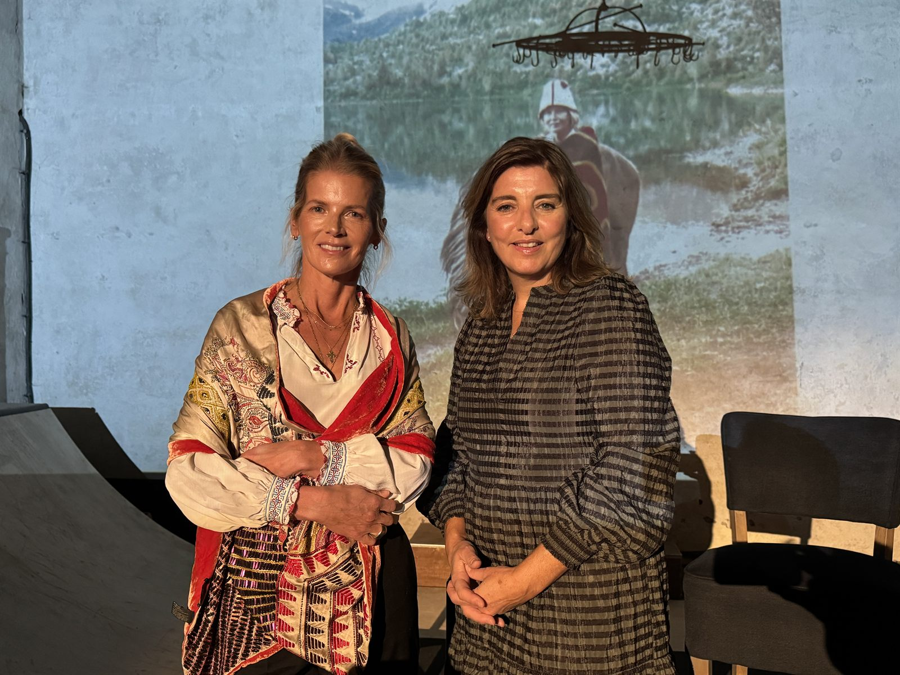
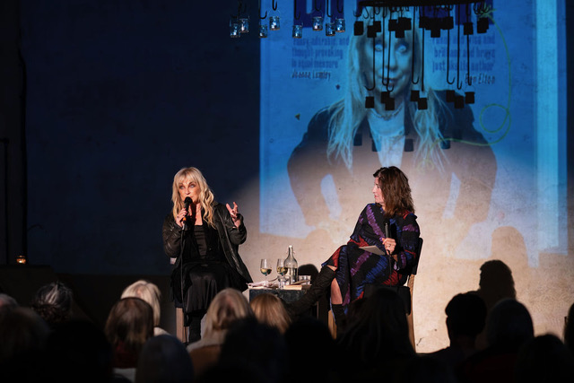
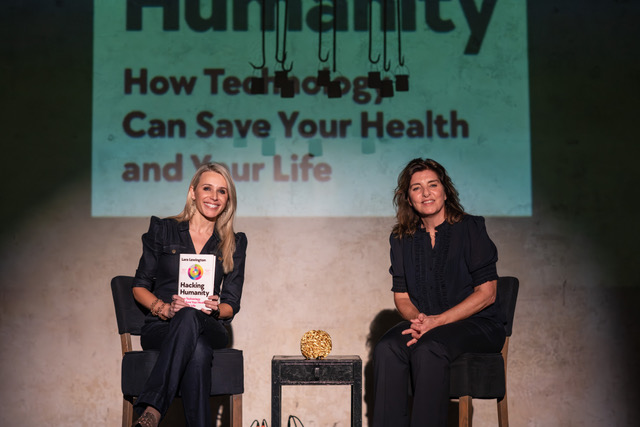
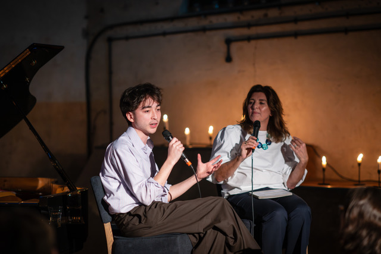
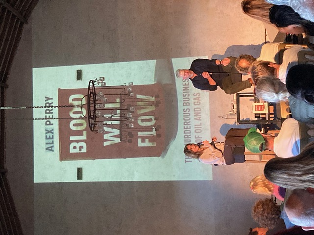
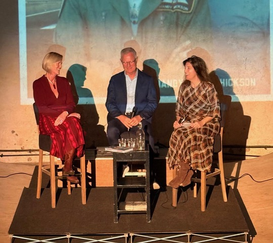

After thirty years producing some of the biggest names in television, Alison Martin knows how to get the best live performance from any guest — and how to bring an audience along for the ride.

Trusted by BBC·Royal Television Society·Salisbury Cathedral·The Yard·Isle of Wight Literary Festival
Every book read, every brief absorbed. Thirty years of production discipline applied to a single evening — so nothing is left to chance.
A space where interviewees can show their true self. Guests relax; audiences feel it; the conversation opens up.
Alison dances in the moment with her guests — steering deftly, hearing every voice, and bringing the audience along for the ride.
Trusted conversations, grounded in respect
Literary — Business — Science — Politics — Popular Culture
Between us

A story of life and love. Farms for City Children over fifty years.
Photograph — @hesterphoto
Ski stories alongside the Snow Finel season launch.
Photograph — Ben Hargreaves
Beyond The Silk Road.

An evening of hosting, fun — and wine.
Photograph — @hesterphoto
How technology can save your health — and your life.
Photograph — @hesterphoto
Instagram sensation with half a million followers worldwide.

Steering things deftly for a very smart, engaged crowd.

Book launch with Mandy & Craig Hickson.
Salisbury Conversations with the BBC, at Salisbury Cathedral.
Also: Dan Snow in conversation for the Royal Television Society · Paul Goldstein — Nine Lives · live soapbox election debates around the country for The Independent.
What clients and guests say
“The tone had the right blend of gravity and levity; a great deal of ground was covered; all participated equally, and all voices were heard. Courtesy prevailed throughout, but not at the expense of tackling controversial topics. It was an engrossing evening.”The Very Revd Nicholas Papadopulos — Dean of Salisbury
“Alison Martin hosted an event with ex-Olympic skier Graham Bell x Snow Finel at The Yard in October 2026 and it was a roaring success. Ali is a wonderful interviewer, immediately putting the talent at ease and pulling out amazing stories. Graham particularly said he really enjoyed working with her. She also managed to weave in brand messages for Snow Finel without compromising the authenticity of the interview. All in all, a highly successful evening for everyone!”Lara Dunn — Snow Finel
“Thank you so much — I really enjoyed it.”Alexandra Tolstoy — Beyond The Silk Road
“Thanks so much for having me — it was such a fun evening with the fantastic Alison Martin.”Lara Lewington — Broadcaster & author, Hacking Humanity
“Thank you so much for a wonderful event — hosting, fun, and wine! Most appreciated, and such a great venue and spirit. I loved it.”Helen Lederer — Comedian & author
“It was such a great conversation, you handled it brilliantly and made it all so easy… thank you for taking such care over the event.”Phil Perry — Michael Morpurgo PR
“The whole evening was a blast — it was a pleasure from start to finish. Thank you for all of your help shaping the evening.”Noah Inada Kim — NIK Classical
“That was a delight: bit of curry, lot of chatter, a few images and some pretty happy patrons — I can’t remember such an interested audience.”Paul Goldstein — Wildlife photographer & author
“Alison was great at steering things so deftly — and a very smart and engaged crowd.”Alex Perry — Author, Blood Will Flow
“A great host as always — loved working with you.”Mandy Hickson — RAF fast-jet pilot & author
“A humungous thank-you for all that you did last night. For all of the preparation — you did a wonderful job.”Craig Hickson — An Officer and Her Gentleman
“You handled last night so calmly and confidently — parachuted in at the eleventh hour, and no-one would have known.”Marie Thomas — Salisbury Conversations
About Alison
Ali started out at BBC Radio Four features, then won a place on the coveted ITN trainee scheme. She began her career as a TV reporter and researcher in news and current affairs, presenting youth, politics and topical programmes for ITV — then moved behind the camera to produce and direct documentaries and popular series.
Big career moments? Covering 9/11 for ITV, presenting live on the day Princess Diana died, running with the bulls in Pamplona and exposing how marijuana is grown wild in the New Zealand bush for Rough Guides.
Beyond the stage
Ali has voiced many TV series, inserts and promos — once described as a “good value Davina McCall”.
Trained in solution-based creative facilitation at the BBC — gathering every viewpoint in the room to build new strategy, find different perspectives, and inject dynamism into a team’s approach to change.
Festivals · conferences · launches · live events
Include your date, venue and format for a fast reply.
Available UK-wide & internationally